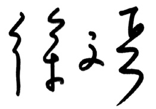

既然已经来到这个世界，谁都没打算活着回去。
连接生死两点的并不是一条直线，摊在平面上，在二维空间上，它的轨迹是曲折的。拐点突兀、尖锐，角度和方向变化较大的是折，相对圆滑、柔和的是曲。竖在立体的三维空间里，生命的轨迹是起伏跌宕的，也是一条曲折线。
如果把两条线结合起来放到时间的坐标轴上看，生命的轨迹就是一组旋转、起伏、升降、蜿蜒的螺旋式曲线，形象恰如组成我们人体的最基本的单位，携带生命信息的脱氧核糖核酸（DNA）。
医学、哲学和宗教都在研究生命的轨迹，试图发现、总结出其内在变化的规律和与外界影响的关系，试图找出转折起伏的关键点。佛家标出了“成住坏空”和“生老病死”。中医秉承道家的玄学和哲学，通过自身的体验感悟和对天地人的观察，标注出了更为详细精确的节点，天地有“生长化收藏”，人有“生长壮老已”。
在《黄帝内经》第一篇“上古天真论”中，天师岐伯论述了男女性生理和心理的变化规律，女性7年一个变化周期，“女子七岁，肾气盛，齿更发长；二七而天癸至，任脉通，太冲脉盛，月事以时下，故有子；三七，肾气平均，故真牙生而长极；四七，筋骨坚，发长极，身体盛壮；五七，阳明脉衰，面始焦，发始堕；六七，三阳脉衰于上，面皆焦，发始白；七七，任脉虚，太冲脉衰少，天癸竭，地道不通，故形坏而无子也。”
男子8年一个变化周期，“丈夫八岁，肾气实，发长齿更；二八，肾气盛，天癸至，精气溢泻，阴阳和，故能有子；三八，肾气平均，筋骨劲强，故真牙生而长极；四八，筋骨隆盛，肌肉满壮；五八，肾气衰，发堕齿槁；六八，阳气衰竭于上，面焦，发鬓颁白；七八，肝气衰，筋不能动，天癸竭，精少，肾藏衰，形体皆极；八八，则齿发去。”
在“灵枢·天年”中，描述了每10年一个周期的人体运动变化规律，直到尽其天年到120岁。“人生十岁，五脏始定，血气已通，其气在下，故好走；二十岁，血气始盛，肌肉方长，故好趋；三十岁，五脏大定，肌肉坚固，血脉盛满，故好步；四十岁，五脏六腑十二经脉，皆大盛以平定，腠理始疏，荣华颓落，发颇斑白，平盛不摇，故好坐；五十岁，肝气始衰，肝叶始薄，胆汁始减，目始不明；六十岁，心气始衰，苦忧悲，血气懈惰，故好卧；七十岁，脾气虚，皮肤枯；八十岁，肺气衰，魄离，故言善误；九十岁，肾气焦，四脏经脉空虚；百岁，五脏皆虚，神气皆去，形骸独居而终矣。”这是天命，是人类不能摆脱的宿命。顺应这个节奏和规律，人就活得轻松快乐长久，违背这个规律和节奏，人就活得痛苦难受早夭。
本书是《黄帝内经》第二篇“四气调神大论”，讲的是天气变化的规律，强调的是人要按照“寒热温凉”四气变化的规律去调整自己的起居作息，调摄自己的情绪和心理，并指出了违背这个规律会导致的疾病和灾害。
“天作孽，犹可违。自作孽，不可活。”
反观几千年人类发展史，尽管不时有各种天灾地难发生，但是对人类的毁灭、受伤害人群的总量和程度并不严重。而人类自身发起的自相残杀的战争内乱，以及对赖以生存的自然环境破坏导致的灾害中，死伤残废的人数却触目惊心。每念及此，总会感慨“上天有好生之德”，人祸总是大于天灾。每念及此，恍然大悟，道家讲的无为，就是在奉劝人类不作恶，少犯错，能这样就谢天谢地了。
生活在大都市的人们不仅感受不到四季的变化、昼夜的更替，反而采取对抗、逆反的方法来破坏自己的生存环境，最终伤害自己的身心健康，衍生出诸多奇奇怪怪的疾病。科技的进步，使得蠢念得以实行，然而方向错了，加快前进速度的结果是离死亡更近。更高、更快、更强的结果就是如此。
生命的大节奏是天命、天气和天时，天气细分为四季、八节、二十四气、七十二候。天时分昼夜、十二时辰。应时当令地生活，这本是中国人的传统，简单自然。
生命的小节奏是呼吸、心跳，以及随之带动的卫气和营血的周流，人的寤寐、消化、吞咽、排便、排卵、射精都有各自的规律，节奏一乱，人就生病。节奏乱到崩溃，人就完蛋。生命的小节奏被人的心神调节掌控，违背了大的四季和昼夜变化的规律，人的心神就是乱的，体内的小环境就会变得一团糟。正所谓：“得神者昌，失神者亡”，“得神者生，失神者死”。
节奏是能量的控制和释放，节奏就是“法”和“律”，调节自己生命的节奏，让它和天地变化同步，这就是守“法”。知“法”、违“法”、犯“法”必遭天谴。
感谢梁冬邀请我参加“重新发现中医太美节目”去解读《黄帝内经》，使我有机会讲经说法。感谢中央人民广播电台《中国之声》编辑播出了这个节目，整整一年，造福影响了上百万的中国人。感谢马松兄和紫图图书能原汁原味呈现这个系列对话。感谢《黄帝内经》听打小组成员的辛勤工作，每次电台节目播出不久，对话的文字版就能见诸于网上。感谢我的助手厚朴二期学员蒋珏的编辑校对。感谢姚晨、封新城、佟大为、胡赳赳等好友的热情推荐。

癸巳年仲春于北京